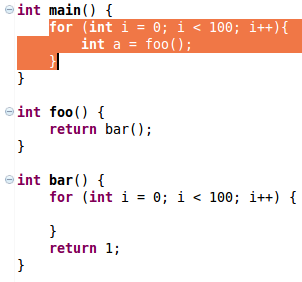
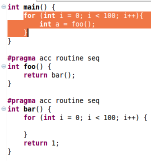

Introduce OpenACC Routine
Use:
Any functions called within an OpenACC parallel or kernels region must be annotated with the OpenACC routine directive.
Description:
Adds a preprocessor directive to functions allowing them to also be compiled for device execution.
Recursively refactors all functions called by the refactored function.
Example:
- Select the statements with the desired function calls and choose Introduce OpenACC Routine under
the refactoring menu.

- The resulting function definitions.

Restrictions:
- There cannot be any inconsistencies in the call levels, e.g., a region with vector parallelism cannot
call a function with gang parallelism.
- A parallelized function cannot contain function static variables.